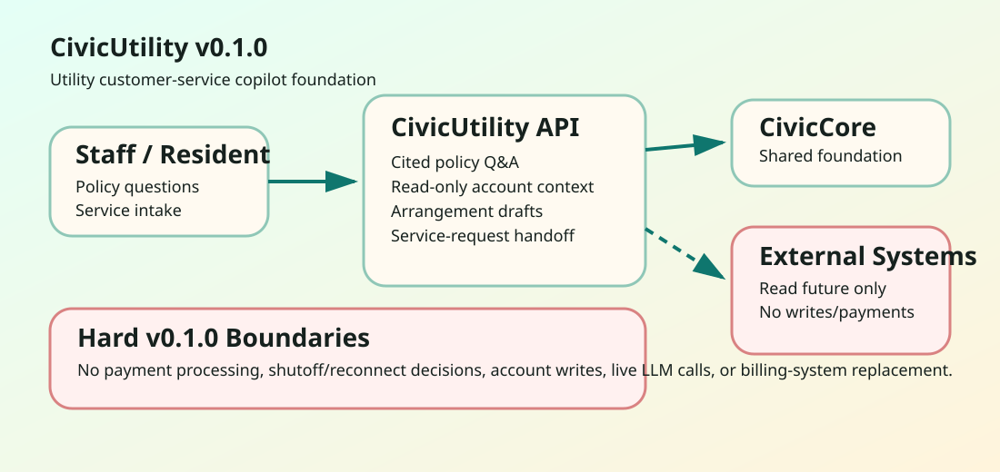

For CSRs
Draft policy answers, arrangement language, and intake notes that a human reviews before use.
CivicUtility helps utility CSRs answer cited billing-policy questions, summarize safe read-only account context, draft payment-arrangement language, and prepare service-request handoffs.
Draft policy answers, arrangement language, and intake notes that a human reviews before use.
Clear explanations of policy, payment options, conservation guidance, and service-request next steps.
FastAPI runtime pinned to civiccore==0.2.0, deterministic tests, and no live billing-system writes.

CivicUtility v0.1.0 does not process payments, approve arrangements, modify accounts, decide shutoffs or reconnects, dispatch crews, call live LLMs, or write back to Civic311 or utility billing systems.
Repository: github.com/CivicSuite/civicutility